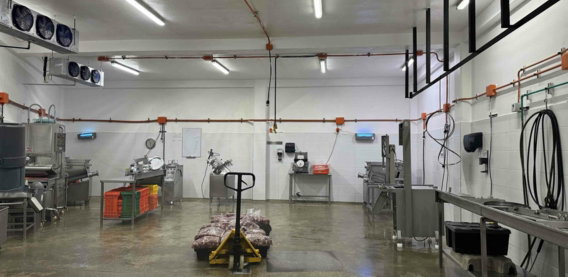
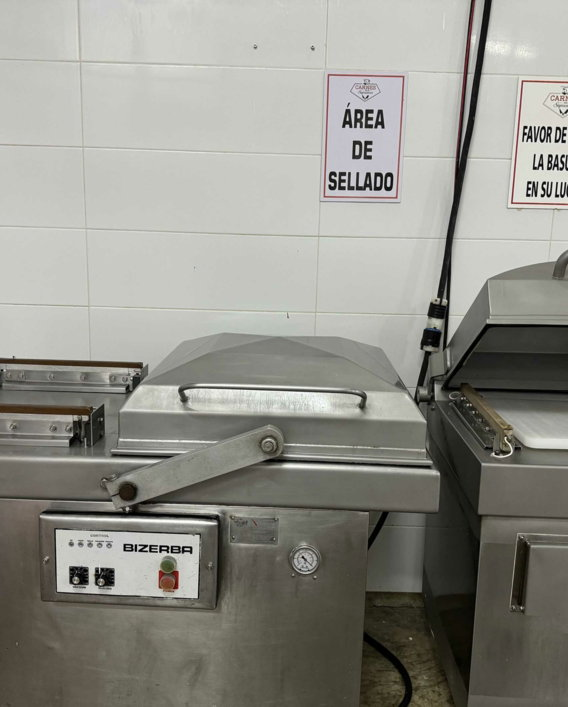
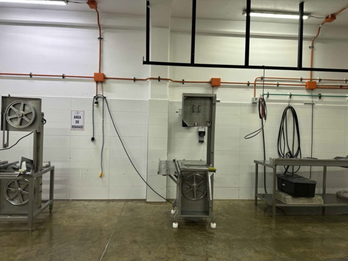
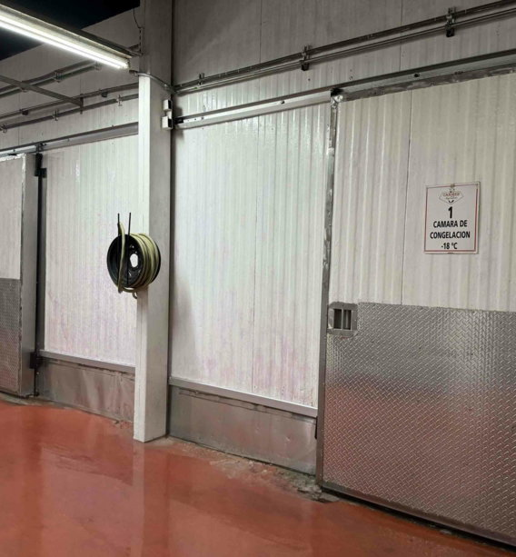
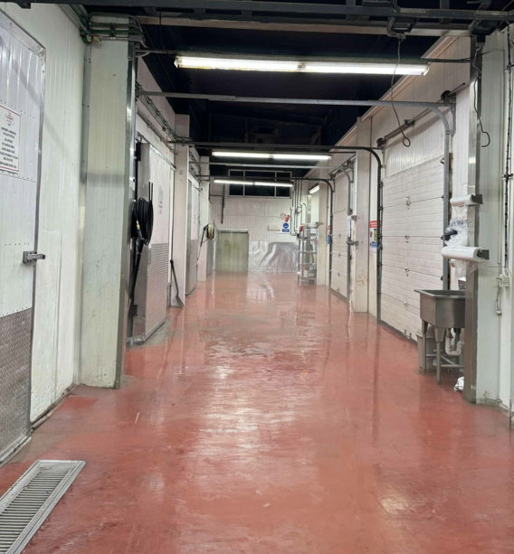
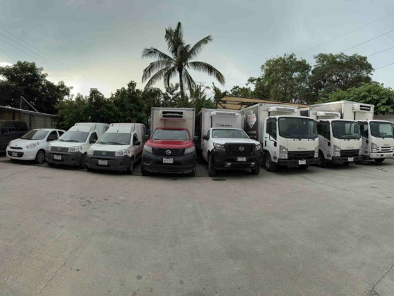
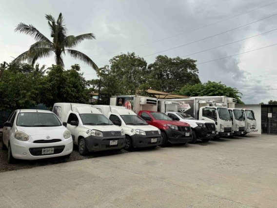

Tipo Inspección Federal
Los productos provienen de rastros con certificación TIF, cuyos procesos de producción, almacenamiento, sacrificio, procesamiento y distribución son inspeccionados para reducir riesgos de contaminación.
Nuestra empresa · Desde 1989
Una empresa vallartense construida alrededor de la confianza, la inocuidad y el compromiso de llevar buenos productos a toda la bahía.
Una historia local
Carnes Supremas abrió sus puertas en 1989 con una idea sencilla: ofrecer productos cárnicos de la mejor calidad en Puerto Vallarta y la bahía.
Con los años, esa promesa creció hasta convertirse en una operación capaz de atender familias, restaurantes, hoteles y grandes cocinas sin perder la cercanía que distingue a una empresa local.
01 · Inocuidad
Un espacio diseñado para trabajar con orden, limpieza y control.
Contamos con un área de procesos equipada para cumplir los requerimientos de inocuidad en el manejo, corte, porcionado y sellado de productos cárnicos.



02 · Capacidad
Infraestructura para responder tanto a hogares como a grandes operaciones.
Nuestras instalaciones cuentan con capacidad de almacenamiento de 180 toneladas y espacios refrigerados para proteger la integridad de cada producto.


03 · Distribución
La cadena de frío continúa hasta la puerta de cada cliente.
Nuestro equipo de reparto cuenta con refrigeración para evitar rupturas en la cadena de frío durante la distribución en Puerto Vallarta y la bahía.


Infraestructura operativa
Procesos, almacenamiento y transporte integrados en una sola operación.
Instalaciones equipadas para corte, porcionado y sellado bajo requerimientos de inocuidad.
250 puntos de auditoría CristalEspacios refrigerados para proteger el producto y responder a operaciones de alto volumen.
180 toneladas de capacidadFlotilla refrigerada para mantener la cadena de frío hasta la entrega en Puerto Vallarta y la bahía.
Reparto profesional refrigeradoCalidad comprobable
Los productos provienen de rastros con certificación TIF, cuyos procesos de producción, almacenamiento, sacrificio, procesamiento y distribución son inspeccionados para reducir riesgos de contaminación.
La certificación Cristal es concedida por LTD y audita mensualmente establecimientos que manejan alimentos mediante 250 puntos de comprobación y control.
Relaciones de largo plazo
Hoteles, resorts, clubes y restaurantes que confían en nuestra operación.
Ver servicio para empresas →Carnes Supremas de Vallarta
Visítanos en cualquiera de nuestras sucursales o escríbenos.